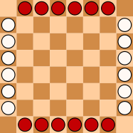
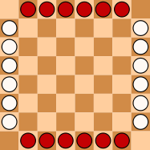

|
 |
History
Lines of Action is a board game similar to Chess and Go that was invented by Claude Soucie around 1969.
Game Play
The Pieces:
There are two different types of pieces in Lines of Action - X's and O's or White and Black. Each player controls one type of piece.
Rules:
To move: Each player takes turns making one valid move.
You may move in a straight line in any direction, called a line of action. To find the number of spaces you may move in a given line of action, count all pieces, both your own and your opponents', along that line. You may move that many squares in that line. You may jump over your own pieces, but not your opponents'. You may also capture the opponents' pieces if your piece lands directly on it. You may not capture your own pieces.
To win: The objective of the game is to move all your pieces into a single connected block. A piece is connected to another piece if it occupies one of the eight squares directly surrounding the other peice. If a move causes both players' pieces to be connected in one block, the player who just moved wins the game. If a player only has one piece remaining, that player has won.
Whoever is X moves first. The players alternate making legal moves. Whenever a player cannot make a legal move, he or she passes the turn to the other player.
Variants:
Misere: The reverse objective of the game to get your opponents pieces into a single connected block. If the opponent only has one piece left, that counts as a single connected block. If a move results in both players having single connected blocks of their own pieces, the player that just moved loses.
Pictures:
|
|
 |
References:
Lines of Action. Lines of Action. 11 Oct 2007. <http://www.boardspace.net/loa/english/index.html>.
Wikipedia. Lines of Action. 11 Oct 2007. <http://en.wikipedia.org/wiki/Lines_of_Action>.